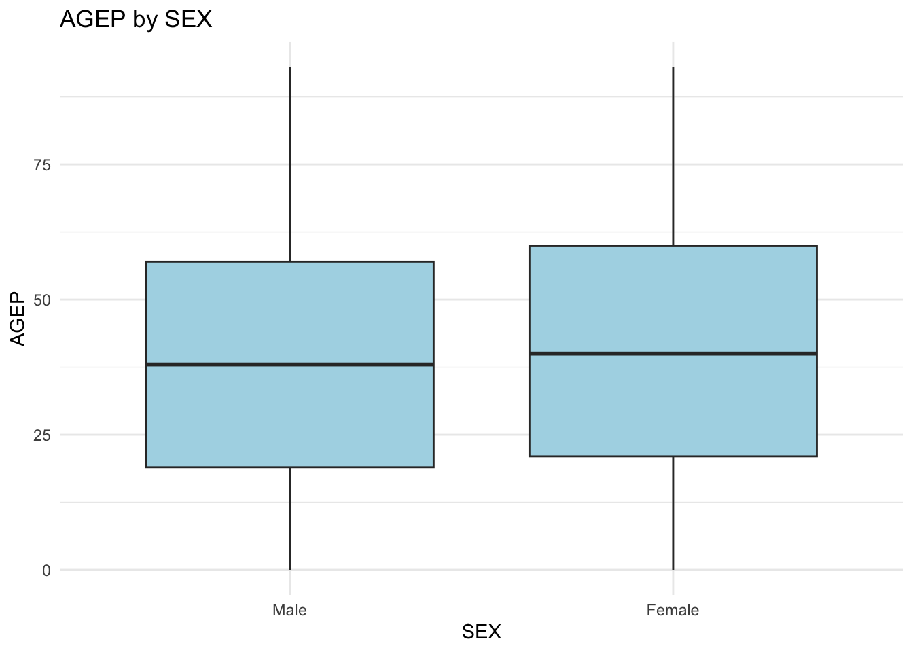
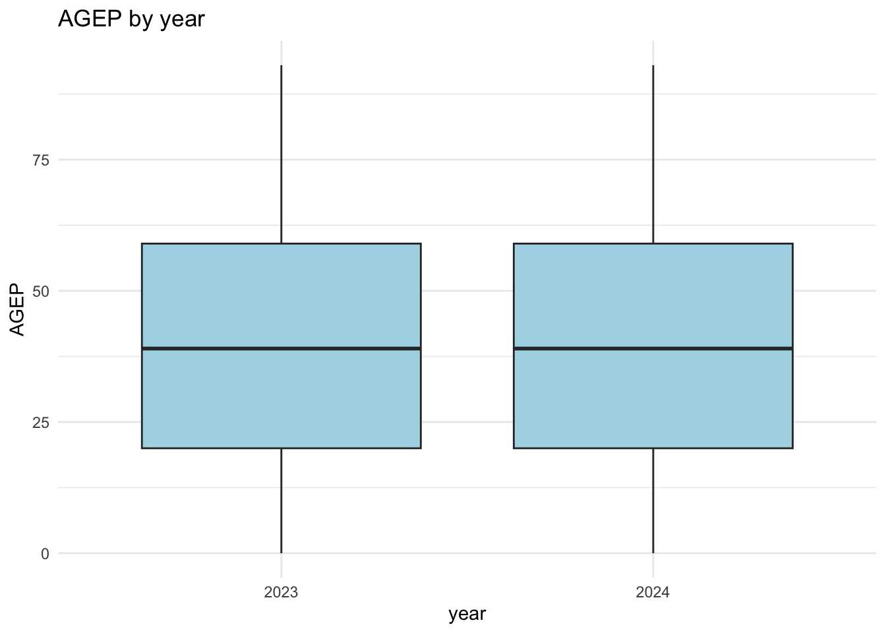

library(tidyverse)
library(httr)
library(jsonlite)
library(lubridate)
library(hms)
census_key <- Sys.getenv("CENSUS_KEY")
if (census_key == "") {
stop("Census API key was not found.")}Exploring Census PUMS Data
Introduction
This project uses data from the U.S. Census Public Use Microdata Sample (PUMS) API. The goal is to create functions that download, clean, combine, summarize and plot Census data. I will first collect the variable information needed to understand the API results. I will then create functions for requesting data from one or more years. The process is shown indetail below with explanations.
Setup
The packages below are used for API requests, data cleaning and time conversion.
Data Processing
Parsing Variable Values
The Census API uses codes for many variables. I first created a function that downloads the variable information for one year and keeps only the variables needed for this project.
pums_variables <- c(
"AGEP", "GASP", "GRPIP", "JWAP", "JWDP", "JWMNP",
"PWGTP", "FER", "HHL", "SCH", "SCHL", "SEX")
get_variable_metadata <- function(year) {
valid_years <- 2021:2024
if (length(year) != 1 || !year %in% valid_years) {
stop("Year must be 2021, 2022, 2023, or 2024.")}
if (year %in% c(2021, 2022)) {
state_variable <- "ST"
} else {
state_variable <- "STATE"}
variables_to_keep <- c(
pums_variables,
state_variable,
"REGION",
"DIVISION")
url <- paste0(
"https://api.census.gov/data/",
year,
"/acs/acs1/pums/variables.json")
response <- GET(url)
stop_for_status(response)
response_text <- content(
response,
as = "text",
encoding = "UTF-8")
response_list <- fromJSON(
response_text,
simplifyVector = FALSE)
all_variables <- response_list$variables
missing_variables <- setdiff(variables_to_keep, names(all_variables))
if (length(missing_variables) > 0) {
stop(
"Some required variables were not found: ",
paste(missing_variables, collapse = ", "))}
all_variables[variables_to_keep]}The information is downloaded for all four years and saved in an RDS file.
if (!file.exists("data/census_variable_values.rds")) {
years <- 2021:2024
census_variable_values <- setNames(
lapply(years, get_variable_metadata),
as.character(years)
)
dir.create("data", showWarnings = FALSE)
saveRDS(
census_variable_values,
"data/census_variable_values.rds")}census_variable_values <- readRDS(
"data/census_variable_values.rds")
names(census_variable_values)[1] "2021" "2022" "2023" "2024"Extracting Value Labels
This helper extracts the codes and labels for one variable. These labels will be used when converting categorical, time and geographic variables.
get_value_labels <- function(year, variable) {
year_information <- census_variable_values[[as.character(year)]]
variable_information <- year_information[[variable]]
if (is.null(variable_information)) {
stop("Variable information was not found.")}
values <- variable_information$values
if (is.null(values)) {
return(NULL)}
if (!is.null(values$item)) {
values <- values$item}
unlist(values, use.names = TRUE)}Check using the SEX variable.
get_value_labels(2024, "SEX") 1 2
"Male" "Female" Parsing an API Response
The next helper turns the result from GET() into a tibble. The first row of the response contains the column names.
response_to_tibble <- function(response) {
stop_for_status(response)
response_text <- content(
response,
as = "text",
encoding = "UTF-8")
api_data <- fromJSON(response_text)
column_names <- as.character(api_data[1, ])
data_rows <- api_data[-1, , drop = FALSE]
output <- as_tibble(data_rows)
names(output) <- column_names
output}This request is used to check the helper.
test_url <- paste0(
"https://api.census.gov/data/2024/acs/acs1/pums",
"?get=AGEP,PWGTP,SEX",
"&for=state:37")
test_response <- GET(
test_url,
query = list(key = census_key))
test_data <- response_to_tibble(test_response)
head(test_data)# A tibble: 6 × 4
AGEP PWGTP SEX state
<chr> <chr> <chr> <chr>
1 23 60 1 37
2 21 49 1 37
3 20 24 1 37
4 79 54 2 37
5 18 79 1 37
6 19 54 2 37 Converting Time Variables
JWAP and JWDP are stored as coded time ranges. This helper finds the midpoint of one time range.
time_midpoint <- function(time_label) {
if (is.na(time_label) || grepl("N/A", time_label, ignore.case = TRUE)) {
return(NA_real_)}
clean_label <- gsub("\\.", "", time_label)
time_parts <- strsplit(clean_label, " to ", fixed = TRUE)[[1]]
if (length(time_parts) != 2) {
return(NA_real_)}
start_time <- parse_date_time(
trimws(time_parts[1]),
orders = c("I:M p", "I p"))
end_time <- parse_date_time(
trimws(time_parts[2]),
orders = c("I:M p", "I p"))
if (is.na(start_time) || is.na(end_time)) {
return(NA_real_)}
start_seconds <- hour(start_time) * 3600 + minute(start_time) * 60
end_seconds <- hour(end_time) * 3600 + minute(end_time) * 60
if (end_seconds < start_seconds) {
end_seconds <- end_seconds + 86400}
midpoint <- (start_seconds + end_seconds) / 2
midpoint %% 86400}This function applies the midpoint calculation to a full column.
convert_time_variable <- function(values, year, variable) {
labels <- get_value_labels(year, variable)
time_labels <- unname(labels[match(values, names(labels))])
midpoint_seconds <- vapply(
time_labels,
time_midpoint,
numeric(1))
as_hms(midpoint_seconds)}Converting Categorical Variables
Categorical variables are changed from codes into factors with readable labels.
convert_to_factor <- function(values, year, variable) {
labels <- get_value_labels(year, variable)
factor(
values,
levels = names(labels),
labels = unname(labels))}Checking Geographic Values
The user can enter a geographic code, label or the word all.
find_geography_code <- function(year, geography, geography_value) {
if (tolower(geography_value) == "all") {
return("*")}
if (geography == "State") {
if (year %in% c(2021, 2022)) {
geography_variable <- "ST"
} else {
geography_variable <- "STATE"
}
} else {
geography_variable <- toupper(geography)}
labels <- get_value_labels(year, geography_variable)
if (geography_value %in% names(labels)) {
return(geography_value)}
label_match <- which(
tolower(unname(labels)) == tolower(geography_value))
if (length(label_match) == 1) {
return(names(labels)[label_match])}
stop("The selected geographic value is not valid for ", geography, ".")}Requesting One Year of Data
The main function checks the inputs, creates the API request and cleens the returned columns.
get_census_data <- function(
year = 2024,
numeric_vars = c("AGEP", "PWGTP"),
categorical_vars = "SEX",
geography = "State",
geography_value = NULL
) {
if (length(year) != 1 || !year %in% 2021:2024) {
stop("Year must be one value: 2021, 2022, 2023, or 2024.")}
allowed_numeric <- c(
"AGEP", "GASP", "GRPIP", "JWAP", "JWDP", "JWMNP", "PWGTP")
if (length(numeric_vars) == 0 ||
!all(numeric_vars %in% allowed_numeric)) {
stop("At least one valid numeric variable is required.")}
if (!"PWGTP" %in% numeric_vars) {
numeric_vars <- c(numeric_vars, "PWGTP")}
if (length(setdiff(numeric_vars, "PWGTP")) < 1) {
stop("Select at least one numeric variable besides PWGTP.")}
allowed_categorical <- c("FER", "HHL", "SCH", "SCHL", "SEX")
if (length(categorical_vars) < 1 ||
!all(categorical_vars %in% allowed_categorical)) {
stop("Select at least one valid categorical variable.")}
allowed_geographies <- c("State", "Division", "Region")
if (length(geography) != 1 ||
!geography %in% allowed_geographies) {
stop("Geography must be State, Division, or Region.")}
if (is.null(geography_value)) {
if (geography == "State") geography_value <- "37"
if (geography == "Division") geography_value <- "5"
if (geography == "Region") geography_value <- "3"}
if (length(geography_value) != 1) {
stop("Only one geographic value can be selected.")}
geography_code <- find_geography_code(
year,
geography,
as.character(geography_value))
requested_variables <- unique(c(numeric_vars, categorical_vars))
base_url <- paste0(
"https://api.census.gov/data/",
year,
"/acs/acs1/pums")
response <- GET(
base_url,
query = list(
get = paste(requested_variables, collapse = ","),
`for` = paste0(tolower(geography), ":", geography_code),
key = census_key))
census_data <- response_to_tibble(response)
regular_numeric <- setdiff(numeric_vars, c("JWAP", "JWDP"))
for (variable in regular_numeric) {
census_data[[variable]][census_data[[variable]] == "N"] <- NA
census_data[[variable]] <- as.numeric(census_data[[variable]])}
time_variables <- intersect(numeric_vars, c("JWAP", "JWDP"))
for (variable in time_variables) {
census_data[[variable]] <- convert_time_variable(
census_data[[variable]],
year, variable)}
for (variable in categorical_vars) {
census_data[[variable]] <- convert_to_factor(
census_data[[variable]],
year, variable)}
geography_column <- names(census_data)[
tolower(names(census_data)) == tolower(geography)]
if (length(geography_column) == 1) {
standard_name <- toupper(geography)
names(census_data)[names(census_data) == geography_column] <- standard_name
if (geography == "State") {
if (year %in% c(2021, 2022)) {
geography_variable <- "ST"
} else {
geography_variable <- "STATE"
}
} else {
geography_variable <- standard_name}
census_data[[standard_name]] <- convert_to_factor(
census_data[[standard_name]],
year,
geography_variable
)}
class(census_data) <- c("census", class(census_data))
census_data}The default state is North Carolina which has Census code 37.
north_carolina_data <- get_census_data(
year = 2024,
numeric_vars = c("AGEP", "PWGTP"),
categorical_vars = "SEX",
geography = "State",
geography_value = "37"
)
head(north_carolina_data)# A tibble: 6 × 4
AGEP PWGTP SEX STATE
<dbl> <dbl> <fct> <fct>
1 23 60 Male North Carolina/NC
2 21 49 Male North Carolina/NC
3 20 24 Male North Carolina/NC
4 79 54 Female North Carolina/NC
5 18 79 Male North Carolina/NC
6 19 54 Female North Carolina/NCclass(north_carolina_data)[1] "census" "tbl_df" "tbl" "data.frame"Combining Multiple Years
The final function calls the single-year function for each requested year, it adds a year column and combines the results.
get_multiple_years <- function(
years,
numeric_vars = c("AGEP", "PWGTP"),
categorical_vars = "SEX",
geography = "State",
geography_value = NULL
) {
if (length(years) < 1 || !all(years %in% 2021:2024)) {
stop("Years must only contain 2021, 2022, 2023, or 2024.")}
yearly_data <- vector("list", length(years))
for (i in seq_along(years)) {
current_year <- years[i]
yearly_data[[i]] <- get_census_data(
year = current_year,
numeric_vars = numeric_vars,
categorical_vars = categorical_vars,
geography = geography,
geography_value = geography_value
) |>
mutate(year = factor(current_year))}
combined_data <- bind_rows(yearly_data)
class(combined_data) <- unique(c("census", class(combined_data)))
combined_data}The example below shows combining of two years of North Carolina data.
combined_nc_data <- get_multiple_years(
years = c(2023, 2024),
numeric_vars = c("AGEP", "PWGTP"),
categorical_vars = "SEX",
geography = "State",
geography_value = "37"
)
head(combined_nc_data)# A tibble: 6 × 5
AGEP PWGTP SEX STATE year
<dbl> <dbl> <fct> <fct> <fct>
1 18 62 Female North Carolina/NC 2023
2 93 94 Female North Carolina/NC 2023
3 22 73 Male North Carolina/NC 2023
4 39 63 Male North Carolina/NC 2023
5 19 50 Male North Carolina/NC 2023
6 39 41 Male North Carolina/NC 2023 class(combined_nc_data)[1] "census" "tbl_df" "tbl" "data.frame"Testing More Function Options
The earlier examples used age and state code. I also checked that the function works with time variable and state name. I requested the usual arrival time at work. The JWAP values should be converted from Census codes into time values as below.
time_test_data <- get_census_data(
year = 2024,
numeric_vars = c("JWAP", "PWGTP"),
categorical_vars = "SEX",
geography = "State",
geography_value = "37"
)
time_test_data |>
filter(!is.na(JWAP)) |>
head()# A tibble: 6 × 4
JWAP PWGTP SEX STATE
<time> <dbl> <fct> <fct>
1 17:57 19 Female North Carolina/NC
2 17:02 14 Male North Carolina/NC
3 16:32 38 Male North Carolina/NC
4 19:42 13 Male North Carolina/NC
5 17:17 44 Female North Carolina/NC
6 10:12 75 Female North Carolina/NCclass(time_test_data$JWAP)[1] "hms" "difftime"The geography function also allows a geographic label instead of only numericcode. The example below uses the North Carolina label.
state_label_test <- get_census_data(
year = 2024,
numeric_vars = c("AGEP", "PWGTP"),
categorical_vars = "SEX",
geography = "State",
geography_value = "North Carolina/NC"
)
head(state_label_test)# A tibble: 6 × 4
AGEP PWGTP SEX STATE
<dbl> <dbl> <fct> <fct>
1 23 60 Male North Carolina/NC
2 21 49 Male North Carolina/NC
3 20 24 Male North Carolina/NC
4 79 54 Female North Carolina/NC
5 18 79 Male North Carolina/NC
6 19 54 Female North Carolina/NCSummary and Plot Functions
Each row in the PUMS data may represent multiple people. The PWGTP column is therefore used as a weight when calculating summaries and creating plots.
Census Summary Method
The function below calculates weighted means and standard deviations for numeric variables and weighted counts for categorical variables.
summary.census <- function(
object,
numeric_vars = NULL,
categorical_vars = NULL,
...
) {
weights <- object$PWGTP
if (is.null(numeric_vars)) {
numeric_columns <- vapply(
object,
is.numeric,
logical(1))
numeric_vars <- setdiff(
names(object)[numeric_columns],
c("PWGTP", "JWAP", "JWDP") )}
if (is.null(categorical_vars)) {
categorical_columns <- vapply(
object,
is.factor,
logical(1))
categorical_vars <- names(object)[categorical_columns]}
numeric_summary <- list()
for (variable in numeric_vars) {
values <- object[[variable]]
keep <- !is.na(values) & !is.na(weights)
values <- values[keep]
current_weights <- weights[keep]
weighted_mean <- sum(
values * current_weights
) / sum(current_weights)
weighted_sd <- sqrt(
sum(values^2 * current_weights) /
sum(current_weights) -
weighted_mean^2
)
numeric_summary[[variable]] <- list(
mean = weighted_mean,
sd = weighted_sd )}
categorical_summary <- list()
for (variable in categorical_vars) {
values <- droplevels(factor(object[[variable]]))
keep <- !is.na(values) & !is.na(weights)
categorical_summary[[variable]] <- tapply(
weights[keep],
values[keep],
sum)}
list(
numeric = numeric_summary,
categorical = categorical_summary)}The function can summarize all available variables or only variables selected by the user.
summary(north_carolina_data)$numeric
$numeric$AGEP
$numeric$AGEP$mean
[1] 39.80583
$numeric$AGEP$sd
[1] 23.28099
$categorical
$categorical$SEX
Male Female
5391320 5654704
$categorical$STATE
North Carolina/NC
11046024 summary(
north_carolina_data,
numeric_vars = "AGEP",
categorical_vars = "SEX")$numeric
$numeric$AGEP
$numeric$AGEP$mean
[1] 39.80583
$numeric$AGEP$sd
[1] 23.28099
$categorical
$categorical$SEX
Male Female
5391320 5654704 Census Plot Method
The plot method creates a weighted boxplot using one categorical variable and one numeric variable.
plot.census <- function(
x,
categorical_var,
numeric_var,
...
) {
if (missing(categorical_var) || missing(numeric_var)) {
stop("Select one categorical and one numeric variable.")
}
if (!categorical_var %in% names(x)) {
stop("The categorical variable was not found.")}
if (!numeric_var %in% names(x)) {
stop("The numeric variable was not found.")}
ggplot(
x,
aes(
x = .data[[categorical_var]],
y = .data[[numeric_var]],
weight = PWGTP
)
) +
geom_boxplot(fill = "lightblue") +
labs(
title = paste(numeric_var, "by", categorical_var),
x = categorical_var,
y = numeric_var
) +
theme_minimal()}The first plot compares age by sex. The second compares age across years.
plot(
north_carolina_data,
categorical_var = "SEX",
numeric_var = "AGEP")
plot(
combined_nc_data,
categorical_var = "year",
numeric_var = "AGEP")